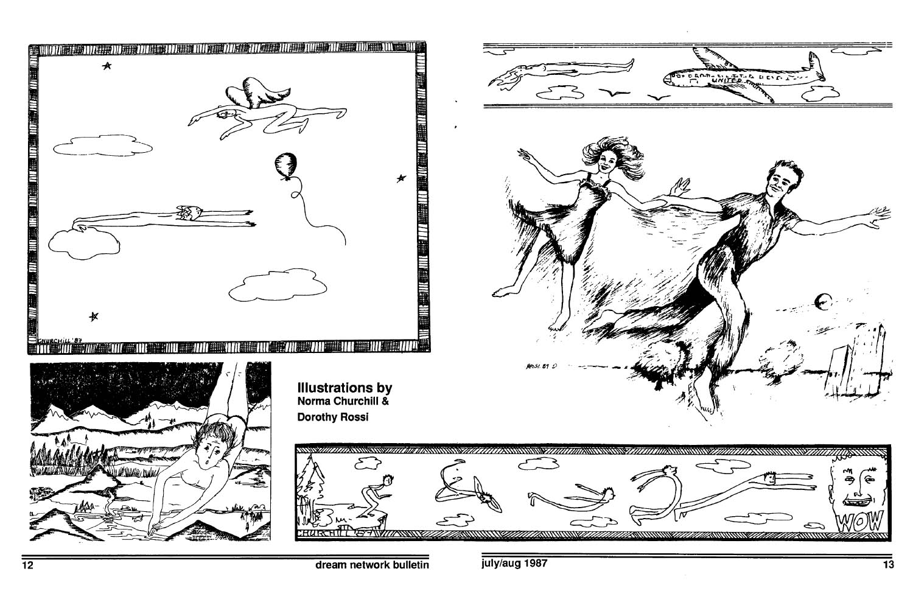

The phenomenon of flying in one's sleep is truly a miracle. If, as they say, ontogeny recapitulates philogeny, then consider the premise that we are all, at some time in our primal development. equipped with tail, gills and wings and all other aspects of an the creatures that live in air and water, especially fish and birds. The fact that dreamers can fly and breathe underwater as well as free fly in their sleep without any previous instruction or practice may be related to this innate, though undeveloped, potential.
For some years I have been collecting flying dreams. Everywhere I go I ask people how they fly. I want to include in this book a few of the interesting reports I've received, both to encourage dream flyers to share their adventures and to inspire others, especially those timid dreamers who have never experienced free flying, to try to relax and develop your will to fly.
The styles of flying are far more numerous than I ever imagined. They include flapping, soaring, sitting, lying, swimming, flopping, breast and butterfly stroking, dolphin kicking, whale tail snapping, and the yoga sit style of flying.
Then we have ASSIST FLYING: people empowered to fly holding a stick, a magic wand, or by riding a refrigerator, bed soaring, carpet flying, floor grabbing, back packing, and, most original, something called bloodpressure cuff pump flying. There is low and high altitude flying. Some can fly only a few inches off the ground. Some can do barn storming. A young woman says she flies, but never above the telephone wires. My son claims he's expert at indoor ceiling hovering. Some people jump to take off and fly at head height. Some fly at building height. Some are totally weightless for outer space flying.
We have human jet travelers and cosmic trans-gravity floaters. Some run on trans-spirit supersonic propulsion. Many hover out of their bodies.
Then there are just plain old fashioned BIRD flappers. Some have to make a great effort to stay up, while others rise off the ground at will. We even have those who fly in the body of another.
There are stories about effortless flight and stories of flight frustration. Some people go somewhere and others go nowhere. You can fly for joy or what one man calls efficiency flying; the only way to get there faster. Some dreamers are propelled by fear, called the fight or flight style. Some Guru followers know about spiritual transcendance, and a gal from California describes orgasmic cartwheeling.
We have stories of people who fly on air channels, people who FLY TO SEE and people who FLY TO FEEL. METHOD FLYING uses guide ropes or long stride takeoffs. Ordinary arm flapping is common, but fish tail flopping is rare. Some dreamers have to run in air or they can't stay up. One physicist uses the balling up method where he shoots through the atmosphere. A mathematician on my street does what he calls the tadpole wiggle. He says he can also sit on the back of a couch and slip out through the top of his head. Some of the experienced meditators say they do levitation rising.
Then there is intention flying versus guided imagining. I've got stories about losing power in midflight, as well as flying faster than light. One woman from the midwest says she flew to her father racing death, and was able to say good by before he died. Some dreamers tell about floating through walls, through floors and windows. They can float down stairs, or descend head first diving, spinning, dancing, with arms backwards and arms forward. Some have no arms at all.
Upside-down flying is more difficult, says a girl from New Hampshire, because you can't see where you are going at all. I'm waiting for more information about ecstatic flying orgasms. The girl who can bring them on at will says she has invented a dream pill and has a teachable Olympic routine of sexual acrobatics and tandem flying.
While presenting some dream programs for the "outer-most" listener supported radio station in Provincetown Mass., I received more contributions to my collection of flying dreams. I am fascinated by the variety of methods, positions, problems and adventures of those lucky dreamers who have the flying skill on command.
